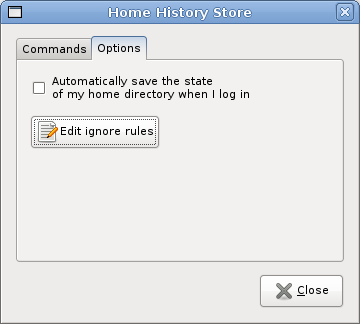
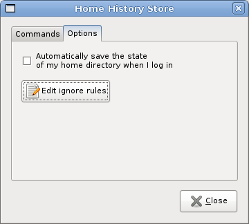
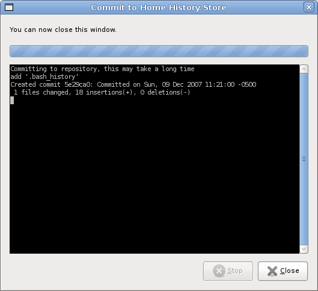
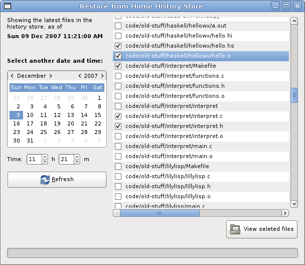

git-home-history is a tool that simplifies keeping track of changes you make in your home directory. It is based on the excellent Git toolkit. git-home-history stores changes you make to your files as time goes by and can thus provides an easy way to go back to earlier versions and see changes you made. You can also use it to easily create backup archives.
This tool aims at being very simple and inobtrusive. You can use it as a command-line tool only, or use a GTK+/Gnome graphical user interface. You can read the manpage to know more about the command-line tool, and have a look at the screenshots below to see the GUI.
You can get the code this way: git clone http://jean-francois.richard.name/ghh.git. Read the Changelog of the Git repository.
You can discuss this tool, propose enhancements and send comments on the git-home-history google group. Any kind of contribution is appreciated.
Obligatory screenshots:
 



All tools are released under the GPLv3.